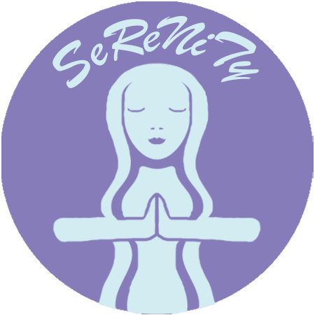

Casey Balcom
WEB 210 - CSS Essential Training/Portfolio
Featured Projects
View selected projects below. More information can be found at christinatruong.com.
Vicious Cycles
This was a final project for my WEB 140 Web Development Fundamentals class, which was an introductory class for HTML and CSS. Our task was to make up a company and create a website for them. My idea was to create a faux multilevel marketing company that offered life-coaching services to reach "enlightenment." I also created the logo myself, basing it on the Starbucks logo, as I worked there at the time.
While I chose to go a silly route with the actual company, I worked hard to make my project look as professional as possible and made sure the scripts worked. For it being my first major Web Development assignment, I believe it turned out very well.
View projectSeReNiTy
This was a final project for my WEB 110 Web Development Tools class. We were tasked with creating a website for a company called Vicious Cycles. We were given a small brief about the company, as well as its logo, but the rest was up to us to come up with.
The project tested our creativity as well as our ability to confidently work in HTML and CSS. While there are many things I now know how to fix, I'm still proud of what I was able to accomplish here.
View projectWork Experience
Produce Employee/Starbucks Barista
Target
May 2021 - Present
Worked in the Produce department and the Starbucks inside of a Super Target.
Education
Kings High School - Kings Mills, OH
High School Diploma, 2017
Magna Cum Laude
Wake Technical Community College - Raleigh, NC
Associates in Applied Sciences, 2020
Gradutated with a degree in Simulation and Game Development, Art and Modeling